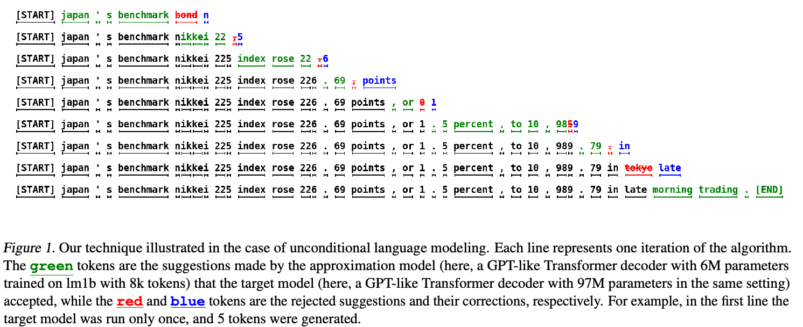
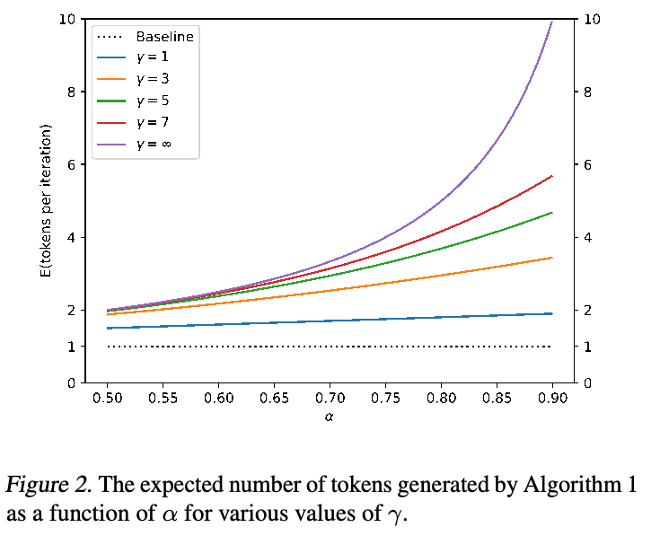
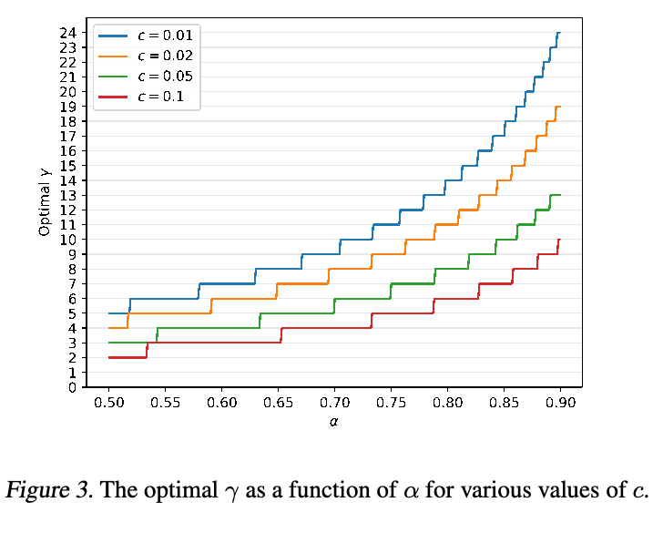
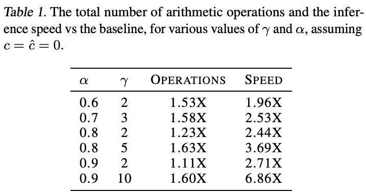
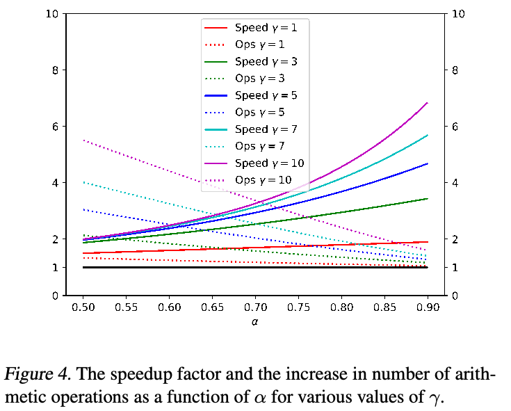
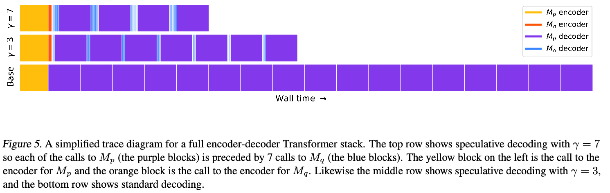
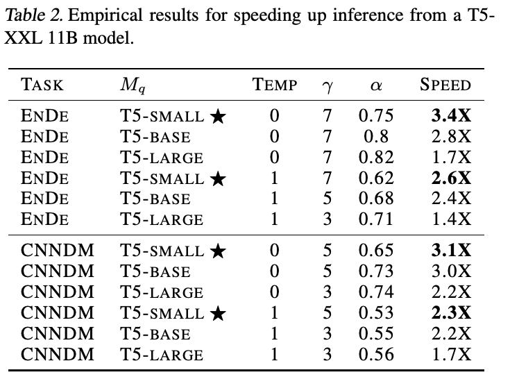
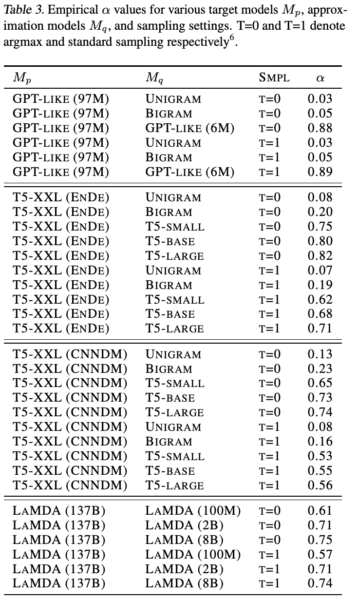
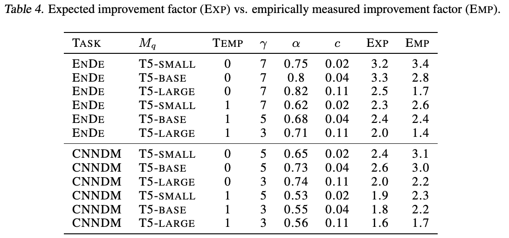
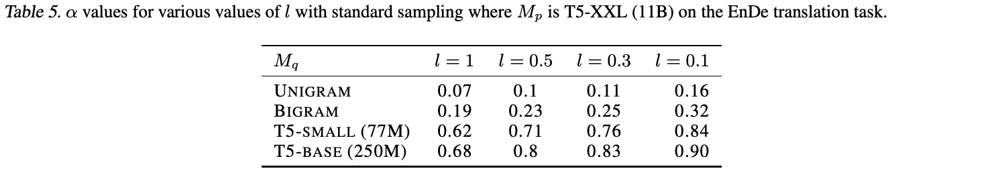

通过 Speculative Decoding 实现 Transformer 快速推理
Yaniv Leviathan* 1、Matan Kalman* 1、Yossi Matias1
摘要
从 Transformer 等大型自回归模型进行推理速度缓慢：decoding \(K\) 个 token 需要串行运行模型 \(K\) 次。本文提出 speculative decoding：一种通过并行计算多个 token，在不对输出作任何改变的前提下，更快地从自回归模型采样的算法。我们的方法基于两点观察：（1）困难的语言建模任务往往包含较容易的子任务，更高效的模型能够很好地近似这些子任务；（2）利用推测执行和一种新采样方法，我们可以在近似模型的输出上并行运行大型模型，从而加速大模型的精确 decoding，有可能同时生成多个 token，同时保持分布不变。我们的方法可以加速现有的现成模型，无需重新训练或修改架构。我们在 T5-XXL 上展示该方法：相较标准 T5X 实现，取得 2–3 倍加速，且输出相同。
1. 引言
大型自回归模型，尤其是大型 Transformer（Vaswani et al., 2017），比小模型能力强得多。近年来，无论在文本还是图像领域，这一点都得到无数次验证，例如 GPT-3（Brown et al., 2020）、LaMDA（Thoppilan et al., 2022）、Parti（Yu et al., 2022）和 PaLM（Chowdhery et al., 2022）。遗憾的是，这些大模型的一步 decoding 显著慢于较小模型；更糟糕的是，这些步骤串行执行：decoding \(K\) 个 token 就需要串行运行模型 \(K\) 次。
鉴于大型自回归模型，特别是大型 Transformer 的重要性，研究者发展了多种方法来加速其推理。一些方法旨在同等降低所有输入的推理成本（例如 Hinton et al., 2015; Jaszczur et al., 2021; Hubara et al., 2016; So et al., 2021; Shazeer, 2019）。另一些方法源于如下观察：并非所有推理步骤都相同，有些需要非常大的模型，而另一些可以由更高效的模型良好近似。这些自适应计算方法（例如 Han et al., 2021; Sukhbaatar et al., 2019; Schuster et al., 2021; Scardapane et al., 2020; Bapna et al., 2020; Elbayad et al., 2019; Schwartz et al., 2020）旨在为较容易的推理步骤使用较少计算资源。虽然许多方案已在实践中证明非常有效，但通常需要修改模型架构、改变训练过程并重新训练模型，也不能保持相同输出。
上述关于推理步骤有“难”有“易”的关键观察，也是本工作的主要动机。我们还观察到，大模型推理的瓶颈往往并非算术运算，而是内存带宽和通信，因此可能仍有额外计算资源可用。由此，我们提出提高并发度，作为自适应调整计算量的补充途径。具体而言，我们能够加速推理，而无需改变模型架构、改变训练过程或重新训练模型，也无需改变模型输出分布。这通过推测执行实现。
推测执行（Burton, 1985; Hennessy & Patterson, 2012）是一种处理器中常用的优化技术：在验证某项任务是否确实需要的同时并行执行它，从而提高并发度。分支预测是推测执行的一个著名例子。为使推测执行有效，我们需要一种高效机制来提出那些很可能需要执行的任务。本文将推测执行推广到随机场景，即某项任务以一定概率需要执行。将其用于 Transformer 等自回归模型的 decoding 时，我们从更高效的近似模型中采样生成结果，作为较慢的目标模型的推测性前缀。借助一种称为 speculative sampling 的新采样方法，我们最大化这些推测任务被接受的概率（接下页）。
*同等贡献。1Google Research，美国加利福尼亚州 Mountain View。通信作者：Yaniv Leviathan，leviathan@google.com。
第 40 届国际机器学习会议论文集，Honolulu，Hawaii，美国。PMLR 202，2023。版权 © 2023 归作者所有。

（接上页）同时保证系统输出与仅使用目标模型时具有相同分布。例如，图 1 的句子包含 38 个 token，得益于更小、更高效的近似模型（600 万参数），我们的方法仅串行运行较大的目标模型（9700 万参数）9 次，就生成了它，同时其生成概率不变。
我们在多种任务与模型规模上分析该方法：使用在 lm1b 上训练的、9700 万参数的类 GPT 模型进行无条件生成；使用 110 亿参数的 T5-XXL 模型进行英译德和新闻文章摘要；以及使用 1370 亿参数的 LaMDA 模型进行对话任务。我们实现该方法，将 T5-XXL 的实际墙钟耗时与可靠的 T5X 实现（Roberts et al., 2022）比较，展示了开箱即用的 2–3 倍延迟改善，且不改变任何输出（第 4 节）。
我们的方法易于在实际生产环境采用，无需训练新模型，也不改变输出。因此，在内存带宽构成瓶颈、且有可用计算资源的常见情况下，它可能成为加速 Transformer 等自回归模型采样的良好默认选择。
概括而言，我们的主要贡献为：（1）将推测执行推广到随机场景，并提出称为 speculative sampling 的新采样方法；（2）提出称为 speculative decoding 的 decoding 机制，能够加速自回归模型 decoding，而无需对模型架构、训练方案或输出分布作任何改变。
2. Speculative Decoding
2.1. 概览
令 \(M_p\) 为我们希望加速其推理的目标模型，\(p(x_t\mid x_{<t})\) 为给定前缀 \(x_{<t}\) 时从该模型得到的分布。令 \(M_q\) 为同一任务上更高效的近似模型，以 \(q(x_t\mid x_{<t})\) 表示给定前缀 \(x_{<t}\) 时从该模型得到的分布1。核心思想为：（1）使用更高效的模型 \(M_q\) 生成 \(\gamma\in\mathbb Z^+\) 个续写 token（该参数的最优选择见第 3.5 节）；（2）用目标模型 \(M_p\) 并行评估所有猜测及其由 \(M_q\) 给出的相应概率，接受所有能保持相同分布的猜测；（3）从调整后的分布额外采样一个 token，以修正第一个被拒绝的 token，或在所有猜测均被接受时追加一个 token。这样，目标模型 \(M_p\) 每次并行运行至少产生一个新 token，因此，即使在最坏情况下，目标模型的串行运行次数也不会超过简单自回归方法；而根据 \(M_q\) 近似 \(M_p\) 的程度，它可能生成许多新 token，最多为 \(\gamma+1\) 个。
2.2. 标准化采样
首先注意，虽然采样有 argmax、top-k、核采样和温度设定等多种方法与参数，常用实现通常在 logits 层面分别处理，但它们都可以轻易转化为从调整后的概率分布进行标准采样。例如，argmax 采样等价于将分布中非最大值元素置零后归一化。因此，我们只需处理从概率分布进行的标准采样（接下页）。
1只要上下文中的前缀 \(x_{<t}\) 明确，就以 \(p(x)\) 表示 \(p(x_t\mid x_{<t})\)，\(q(x)\) 亦然。
（接上页）并将所有其他采样类型转化到这个框架中。下文假设 \(p(x)\) 和 \(q(x)\) 分别是 \(M_p\) 与 \(M_q\) 输出的、已按采样方法调整的分布。
2.3. Speculative Sampling
为了采样 \(x\sim p(x)\)，我们改为采样 \(x\sim q(x)\)：如果 \(q(x)\le p(x)\)，就保留它；如果 \(q(x)>p(x)\)，则以概率 \(1-\frac{p(x)}{q(x)}\) 拒绝该样本，并改为从调整后的分布 \(p'(x)=\operatorname{norm}(\max(0,p(x)-q(x)))\) 重新采样 \(x\)。容易证明（见附录 A.1），对于任意分布 \(p(x)\) 和 \(q(x)\)，以此方式采样的 \(x\) 确实满足 \(x\sim p(x)\)。
给定在条件前缀 prefix 上运行 \(M_q\) 得到的分布 \(q(x)\)，我们可以采样 token \(x_1\sim q(x)\)。随后在 prefix 上运行 \(M_p\)，计算分布 \(p(x)\)；与此同时，在 \(\texttt{prefix}+[x_1]\) 上运行 \(M_p\)，推测性地计算下一个 token \(x_2\) 的分布。两项计算完成后，按上述方式处理：若 \(x_1\) 被拒绝，则丢弃 \(x_2\) 的计算，并从调整后的分布重新采样 \(x_1\)；若 \(x_1\) 被接受，则保留两个 token。算法 1 将此推广为一次采样 1 到 \(\gamma+1\) 个 token。
算法 1 SpeculativeDecodingStep
输入：\(M_p,M_q,\texttt{prefix}\)。
- 从 \(M_q\) 自回归采样 \(\gamma\) 个猜测 \(x_1,\ldots,x_\gamma\)。对 \(i=1,\ldots,\gamma\)：令 \(q_i(x)\leftarrow M_q(\texttt{prefix}+[x_1,\ldots,x_{i-1}])\)，采样 \(x_i\sim q_i(x)\)。
- 并行运行 \(M_p\)：\[p_1(x),\ldots,p_{\gamma+1}(x)\leftarrow M_p(\texttt{prefix}),\ldots,M_p(\texttt{prefix}+[x_1,\ldots,x_\gamma]).\]
- 确定接受的猜测数 \(n\)。采样 \(r_1\sim U(0,1),\ldots,r_\gamma\sim U(0,1)\)，然后令 \[n\leftarrow\min\left(\left\{i-1\mid1\le i\le\gamma,\ r_i>\frac{p_i(x)}{q_i(x)}\right\}\cup\{\gamma\}\right).\]
- 必要时调整 \(M_p\) 的分布。令 \(p'(x)\leftarrow p_{n+1}(x)\)。若 \(n<\gamma\)，则令 \[p'(x)\leftarrow\operatorname{norm}(\max(0,p_{n+1}(x)-q_{n+1}(x))).\]
- 返回一个来自 \(M_p\) 的 token，以及 \(n\) 个来自 \(M_q\) 的 token。采样 \(t\sim p'(x)\)，返回 \(\texttt{prefix}+[x_1,\ldots,x_n,t]\)。
3. 分析
3.1. 生成的 Token 数量
下面分析目标模型串行调用次数的降低倍数，等价地，也就是算法 1 单次运行生成的期望 token 数量。
定义 3.1。给定前缀 \(x_{<t}\)，接受率 \(\beta_{x_{<t}}\) 是按第 2.3 节的 speculative sampling 接受 \(x_t\sim q(x_t\mid x_{<t})\) 的概率2。
因此，\(E(\beta)\) 是衡量 \(M_q\) 对 \(M_p\) 近似程度的自然指标。若作简化假设，认为各个 \(\beta\) 独立同分布，并记 \(\alpha=E(\beta)\)，那么算法 1 单次运行产生的 token 数就是成功概率为 \(1-\alpha\)、上限为 \(\gamma+1\) 的截顶几何随机变量。其期望生成 token 数满足式（1），见图 2。
\[E(\#\text{生成的 token})=\frac{1-\alpha^{\gamma+1}}{1-\alpha}.\tag{1}\]
3.2. 计算 \(\alpha\)
现在给定一个前缀和两个模型 \(M_p,M_q\)，推导计算 \(\alpha\) 的简单公式。首先定义一个自然的散度 \(D_{LK}\)：
定义 3.2。\[D_{LK}(p,q)=\sum_x|p(x)-M(x)|=\sum_x|q(x)-M(x)|,\quad M(x)=\frac{p(x)+q(x)}2.\]
引理 3.3。\(D_{LK}(p,q)=1-\sum_x\min(p(x),q(x))\)。
证明。
\[D_{LK}(p,q)=\sum_x|p(x)-M(x)|=\sum_x\frac{|p-q|}{2}=1-\sum_x\frac{p+q-|p-q|}{2}=1-\sum_x\min(p(x),q(x)).\quad\square\]由引理 3.3 立即得到以下结果（接下页）。
2与前面一样，在上下文中的前缀明确时省略下标 \(x_{<t}\)。
推论 3.4。\(D_{LK}(p,q)\) 是取值于 \([0,1]\) 的对称散度。
\[D_{LK}(p,q)=0\iff p=q.\]\[D_{LK}(p,q)=1\iff p\text{ 与 }q\text{ 的支撑集不相交}.\]定理 3.5。\(\beta=1-D_{LK}(p,q)\)。
证明。
\[\begin{aligned}\beta&=E_{x\sim q(x)}\begin{cases}1,&q(x)\le p(x),\\p(x)/q(x),&q(x)>p(x)\end{cases}\\&=E_{x\sim q(x)}\min\left(1,\frac{p(x)}{q(x)}\right)=\sum_x\min(p(x),q(x)).\end{aligned}\quad\square\]最终得到：
推论 3.6。\(\alpha=1-E(D_{LK}(p,q))=E(\min(p,q))\)。
实验中实测的 \(\alpha\) 值见表 3。
3.3. 墙钟耗时改善
我们已经证明，在独立同分布假设下，算法将目标模型调用次数降低 \(\frac{1-\alpha^{\gamma+1}}{1-\alpha}\) 倍。注意，推测执行一般而言，以及本算法具体而言，都假设有足够计算资源支持增加的并发（第 3.4 节）。在墙钟耗时分析中，我们假设能并行执行 \(\gamma+1\) 次 \(M_p\) 评估而不增加墙钟耗时。为得到总耗时改善，现在考虑运行近似模型 \(M_q\) 的成本。
定义 3.7。令成本系数 \(c\) 为 \(M_q\) 单次运行时间与 \(M_p\) 单次运行时间之比。
注意，\(\alpha\) 是模型和任务的内在属性，而 \(c\) 的值取决于硬件配置和软件实现细节。在我们的实验中，\(M_q\) 通常比 \(M_p\) 小约两个数量级，\(c\) 始终小于 0.05，并且常常接近零，可以忽略。
定理 3.8。算法 1 的总墙钟耗时期望改善倍数为 \(\frac{1-\alpha^{\gamma+1}}{(1-\alpha)(\gamma c+1)}\)。
证明。记 \(M_p\) 单步运行成本为 \(T\)。算法 1 每次运行成本为 \(Tc\gamma+T\)，即运行 \(M_q\) 共 \(\gamma\) 次、运行 \(M_p\) 一次；根据式（1），平均生成 \(\frac{1-\alpha^{\gamma+1}}{1-\alpha}\) 个 token。因此，算法 1 每生成一个 token 的总体期望成本为 \(\frac{(c\gamma+1)(1-\alpha)}{1-\alpha^{\gamma+1}}T\)。标准 decoding 算法生成单个 token 的成本为 \(T\)，故得到所需结论。\(\square\)
注意，定理 3.8 假设生成长度足够长；例如，由于 \(M_p\) 至少运行一次，改善倍数的上限是生成的 token 数量。
推论 3.9。如果 \(\alpha>c\)，则存在某个 \(\gamma\) 使我们获得改善，且改善倍数至少为 \(\frac{1+\alpha}{1+c}\)。
证明。若某个 \(\gamma\) 能带来改善，那么任意 \(0<\gamma^*<\gamma\) 也能带来改善。因此，要判断本方法是否能带来改善，可以在定理 3.8 中取 \(\gamma=1\)，得到 \(\frac{1-\alpha^2}{(1-\alpha)(c+1)}=\frac{1+\alpha}{1+c}\)。\(\square\)
3.4. 算术运算数量
算法 1 并行运行 \(M_p\) 共 \(\gamma+1\) 次，因此并发算术运算数量增长为 \(\gamma+1\) 倍。由于每轮最多产生 \(\gamma+1\) 个 token，总算术运算量可能高于标准 decoding 算法。接受 \(M_q\) 的样本时，增加的并发是“免费”的，总运算量不增加3。但拒绝猜测时，就浪费了计算。下面分析本方法对总算术运算量的影响。
定义 3.10。令 \(\hat c\) 为近似模型 \(M_q\) 每 token 算术运算量与目标模型 \(M_p\) 对应运算量之比。
定理 3.11。算法 1 总运算量的期望增长倍数为 \(\frac{(1-\alpha)(\gamma\hat c+\gamma+1)}{1-\alpha^{\gamma+1}}\)。
证明。记标准 decoding 基线每 token 的算术运算量为 \(\hat T\)，即单次运行 \(M_p\) 的运算量。算法 1 单轮耗费 \(\hat T\hat c\gamma+\hat T(\gamma+1)\) 次运算，分别对应 \(\gamma\) 次 \(M_q\) 运行和 \(\gamma+1\) 次并行 \(M_p\) 运行。除以算法 1 的期望生成 token 数，即式（1），再除以 \(\hat T\)，便得到所需结论。\(\square\)
\(\alpha\) 较低时，算术运算量增幅较高，反之亦然。注意，对 Transformer decoder 而言，算法 1 的总算术运算量（不计 \(M_q\) 运行）可以用同等规模 Transformer 编码器单次运行的运算量作为上界。
与总算术运算量不同，本方法能够降低总内存访问量。具体而言，算法 1 每次执行只需读取一次目标模型权重和 KV cache；根据式（1），读取它们的内存访问次数因此降低 \(\frac{1-\alpha^{\gamma+1}}{1-\alpha}\) 倍。
3.5. 选择 \(\gamma\)
给定 \(c\) 和 \(\alpha\)，并假设计算资源充足（见第 3.4 节），最优的 \(\gamma\) 就是使墙钟耗时改善公式最大化的值（接下页）。
3忽略 \(M_q\) 的成本。

（接上页）即定理 3.8 的 \(\frac{1-\alpha^{\gamma+1}}{(1-\alpha)(\gamma c+1)}\)。由于 \(\gamma\) 是整数，可以轻易通过数值方法求得，见图 3。
在假设 \(c=\hat c=0\) 时，表 1 和图 4 展示了不同 \(\alpha\)、\(\gamma\) 下推理速度与总算术运算量之间的权衡。图 5 给出简化的执行轨迹图。

由于各个 \(\beta\) 并不恒定，我们不必依据 \(\alpha\) 选定单个 \(\gamma\) 值，而可以预测 \(\beta\)，在算法 1 运行期间相应改变 \(\gamma\)，以进一步改善。为了给额外改善倍数求上界，假设存在一个能给出 \(\gamma\) 的预言机，那么 \(E(\#\text{生成的 token})=\frac1{1-\alpha}\)。对于典型的 \(c\)、\(\alpha\)，并假设计算资源无上限，增强后的墙钟耗时改善倍数最多可比固定 \(\gamma\) 时高约 60%。我们将这一探索留待未来工作4。

3.6. 近似模型
无论如何选择近似模型 \(M_q\)，speculative sampling 以及由此得到的 speculative decoding 都无条件保证相同的输出分布（见附录 A.1）。在实验中，我们主要测试现有的现成小型 Transformer 作为近似模型。此外，我们只测试了与目标模型 \(M_p\) 架构相同、概率标准化方式相同的近似模型。在这种设置下，选择比 \(M_p\) 小约两个数量级的 \(M_q\)，通常能在 \(\alpha\) 和 \(c\) 之间取得最好平衡（定理 3.8）。
另一类近似模型是成本可忽略的模型，其 \(c\approx0\)，即相对于目标模型，近似模型成本可忽略。此时期望墙钟耗时改善为 \(\frac{1-\alpha^{\gamma+1}}{1-\alpha}\)，上界为 \(\frac1{1-\alpha}\)，在 \(\gamma\) 很大时接近等号。n-gram 模型是一类有趣的成本可忽略近似模型，其评估只需查表。有趣的是，在实证测试中（第 4.2 节），即使这些简单 n-gram 模型，也能得到非零 \(\alpha\)。例如，在英德翻译任务上，以 T5-XXL 11B 为 \(M_p\)，以简单 bigram 模型为 \(M_q\)，得到 \(\alpha\approx0.2\)，在 \(\gamma=3\) 时带来 1.25 倍推理加速。
其他简单启发式也可以用作成本可忽略的近似模型。例如，在摘要任务或聊天类界面5等长序列很可能重复的情形中，如果找到匹配前缀，就直接复制上下文 token 的近似模型，可能得到很高的 \(\alpha\)（接下页）。
4上述上界假设仍运行 \(M_p\) 验证预言机的预测。如果跳过这些验证，则该上界不成立，而且会得到显著的额外改善。
5例如用户与语言模型围绕文本或代码等内容反复迭代：“你能重写这个故事，但改变结尾吗？”“你能让这个函数也执行 X 吗？”

（接上页）这些无参数的近似模型还有一个额外优点：从生产角度看，它们更易部署。
Speculative decoding 也可以采用另一类近似模型，即 Stern et al.（2018）等非自回归模型。此时，只需调用非自回归模型一次，就能替代算法 1 中的自回归循环。
最后一个主要在理论上有趣的例子，是随机选择 token 的近似模型。对于所有 \(M_p\)，它都保证带来一些改善，尽管非常小。
4. 实验
4.1. 实测墙钟耗时改善
我们实现该算法，并与 T5X 代码库中的实现比较，以加速 T5-XXL。
设置。我们在 T5 论文中的两项任务上测试标准编码器—decoder T5 version 1.1 模型（Raffel et al., 2020）：（1）在 WMT EnDe 上微调的英译德；（2）在 CCN/DM 上微调的文本摘要。两项任务都以 T5-XXL（11B）为 \(M_p\)。对于近似模型 \(M_q\)，我们测试了多种现有配置：T5-large（800M）、T5-base（250M）和 T5-small（77M）（Raffel et al., 2020）。所有模型均使用现有 checkpoint。在单块 TPU-v4 上，以 batch 大小 1，分别对 argmax 采样（temp=0）和标准采样（temp=1）测量墙钟耗时改善。
结果。表 2 给出本方法的实验结果。在测试的近似模型中，T5-small（77M）在 \(c\) 与 \(\alpha\) 之间取得良好平衡，带来最高加速比。正如预期，\(\alpha\) 随近似模型规模增大而增加。有趣的是，argmax 采样（temp=0）的 \(\alpha\) 和墙钟耗时改善都更高。翻译任务的加速比为 2.6 倍（temp=1）和 3.4 倍（temp=0）；摘要任务略低，为 2.3 倍（temp=1）和 3.1 倍（temp=0）。这些实验结果与理论预测吻合，部分差异来自实现细节（见附录 A.3）。

4.2. 实测 \(\alpha\) 值
虽然我们只为 T5 实现了本方法，但测量了不同任务、采样方法、目标模型 \(M_p\) 和近似模型 \(M_q\) 的 \(\alpha\)。具体而言，对下面每种设置，我们在 \(M_p\) 生成的 10K 个 token 上评估推论 3.6 中的期望。
类 GPT（9700 万参数）。我们在无条件语言生成任务上测试一个在 lm1b（Chelba et al., 2013）上训练的仅 decoder Transformer。这里的模型是使用 GeLU 激活（Hendrycks & Gimpel, 2016）的类 GPT Transformer decoder。对于 \(M_q\)，我们尝试了一个拥有 600 万参数的 Transformer decoder 模型（接下页）。
（接上页）其隐藏维度为 256，前馈维度为 1024，2 层，4 个 attention 头；我们还测试了简单的 unigram 和 bigram 模型。\(M_p\) 拥有 9700 万参数：隐藏维度 768，前馈维度 3072，12 层，12 个 attention 头。所有模型均采用 8K token 的 BERT 分词（Devlin et al., 2019）。
LaMDA（1370 亿参数）。我们在对话任务上测试了一个仅 decoder LaMDA 模型（Thoppilan et al., 2022）。使用现有 LaMDA 137B checkpoint 作为 \(M_p\)，使用 LaMDA 8B、LaMDA 2B 和 LaMDA 100M 作为 \(M_q\)。
T5-XXL（110 亿参数）模型的设置见第 4.1 节。
表 3 汇总测试场景的 \(\alpha\)。我们观察到，比目标模型小约两个数量级的近似模型，往往得到 0.5 到 0.9 的 \(\alpha\)。有趣的是，对所有模型，调整后的分布越尖锐，\(\alpha\) 越高。最后，即便简单 unigram、bigram 近似，也产生不可忽略的 \(\alpha\)。例如，在英译德中，bigram 模型的 \(\alpha\) 为 0.2；由于此时 \(c=0\)，能取得 1.25 倍加速。对这个简单近似模型而言，这一结果出人意料地高，但仍低于使用 T5-small 作为近似模型的加速比。

5. 相关工作
大型模型的推理效率已被广泛研究（Dehghani et al., 2021）。许多方法旨在加速一般大模型，尤其是 Transformer 等自回归模型的推理。大量技术试图提高所有 token 的推理效率，例如蒸馏（Hinton et al., 2015）、稀疏化（Jaszczur et al., 2021）、量化（Hubara et al., 2016）和架构修改（So et al., 2021; Shazeer, 2019）。与我们更接近的是按问题难度调整计算量的自适应计算方法（Han et al., 2021），例如仅关注输入子集（Sukhbaatar et al., 2019）以及提前退出（Schuster et al., 2021; Scardapane et al., 2020; Bapna et al., 2020; Elbayad et al., 2019; Schwartz et al., 2020）。其中 Wisdom of Committees（Schwartz et al., 2020）利用现成小模型，但它属于自适应计算，使用启发式决定何时停止，因此失去了与目标模型输出相同的保证。一般而言，自适应计算方法通常在模型内部或借助辅助模型，学习何时可以走计算捷径。它们通常同时节省推理时间和算术运算量，但需要改变架构、改变训练过程，并训练定制模型或重新训练现有模型。它们通常也会改变模型输出。我们注意到，上述许多方法改善了内存访问与算术运算之比；但若该比值仍较高，它们可能与我们的 speculative decoding 有效配合。
先前有两种方法利用推测执行加速自回归模型 decoding。分块并行 decoding（Stern et al., 2018）与本工作类似，并行 decoding 多个 token。但它仅支持贪心 decoding（temperature=0），不支持一般随机场景；它需要额外训练定制模型，并着重保持下游任务质量，而非保证相同输出。浅层激进 decoding（SAD）（Sun et al., 2021）也与本工作类似，并行 decoding 多个 token。不同的是，SAD 只支持将输入复制到输出（接下页）。
（接上页）而不支持一般近似模型，因此只适用于语法纠错等输入和输出非常相似的场景。此外，与分块并行 decoding 一样，SAD 不支持一般的随机采样场景。
在我们首次发表工作之后，speculative decoding 的一个独立实现（Chen et al., 2023）在 Chinchilla 70B 上展示了相近的 2–2.5 倍改善。
6. 讨论
我们提出了 speculative sampling，使高效的随机推测执行，即随机场景中的推测执行，成为可能。我们通过 speculative decoding 分析了它对 Transformer 等自回归模型 decoding 的影响，并证明只要计算资源充足，在实践中相较常用的优化实现 T5X，可获得显著的 2–3 倍加速。
推测执行一般而言，以及 speculative decoding 具体而言，有一个局限：它们通过提高并发度来改善延迟，代价是增加算术运算数量。因此，对没有额外计算资源可用的配置，本方法没有帮助。但在有额外计算资源的常见情况中，例如内存带宽构成瓶颈时，本方法在加速的同时提供显著优势：模型架构不变，无需重新训练，最重要的是，保证输出分布保持相同。本方法易于实现，可以利用开箱即用的模型加速推理，无需开发和评估定制方案。
后续研究有多个方向，尤其是进一步研究 speculative decoding 与 beam search 的兼容性（见附录 A.4）。虽然现成近似模型已能带来显著加速，但定制近似模型（第 3.6 节）或许能带来更大改善，例如采用定制架构（定制规模、非自回归模型或各种启发式），或定制训练过程（如用 \(M_p\) 的软目标进行标准蒸馏，或直接针对 \(\alpha\) 优化 \(M_q\)）。探索分层算法也可能很有趣：近似模型本身再由更快的模型加速，从而允许采用更强的近似模型。本文在整个推理过程中固定了近似模型和猜测数量 \(\gamma\)，而在推理中改变它们可能带来进一步改善（第 3.5 节）。实验中，我们始终对近似模型输出分布采用与目标模型期望分布相同的标准化方式（第 2.2 节），但采用不同变换也许能进一步改善。我们只在文本模态上测试了 speculative decoding，但它可能也适用于图像等其他领域，值得实验。
最后，随机推测执行和 speculative sampling 也可能用于自回归模型 speculative decoding 之外的场景。例如，给定两个慢函数 \(f(x)\) 和 \(g(y)\)，其中 \(f(x)\) 生成一个分布，而 \(g\) 的输入从该分布采样，就可以用本方法并行运行 \(f\) 与 \(g\)。这种设置可能出现在物理模拟，或者强化学习中：\(f\) 是输出动作分布的大模型，\(g\) 是世界模拟。这值得探索。
致谢
特别感谢 YaGuang Li 对所有 LaMDA 相关事项的帮助，以及计算论文中的 LaMDA 数据；感谢 Blake Hechtman 对 XLA 提供的深刻见解和帮助。我们也感谢审稿人富有洞见的意见，以及 Asaf Aharoni、Reiner Pope、Sasha Goldshtein、Nadav Sherman、Eyal Segalis、Eyal Molad、Dani Valevski、Daniel Wasserman、Valerie Nygaard、Danny Vainstein、Google 的 LaMDA 和 Theta Labs 团队，还有我们的家人。
6注意，LaMDA 模型的输出始终经过 Top 40 过滤。这对 argmax 没有影响，但对标准采样有一定影响。
参考文献
Bapna, A., Arivazhagan, N., and Firat, O. 控制神经序列模型中的计算与质量权衡。 ArXiv, abs/2002.07106, 2020. Brown, T. B., Mann, B., Ryder, N., Subbiah, M., Kaplan, J., Dhariwal, P., Neelakantan, A., Shyam, P., Sastry, G., Askell, A., Agarwal, S., Herbert-V oss, A., Krueger, G., Henighan, T., Child, R., Ramesh, A., Ziegler, D. M., Wu, J., Winter, C., Hesse, C., Chen, M., Sigler, E., Litwin, M., Gray, S., Chess, B., Clark, J., Berner, C., McCandlish, S., Radford, A., Sutskever, I., and Amodei, D. 语言模型是少样本学习器。 In Proceedings of the 34th International Conference on Neural Information Processing Systems, NIPS’20, Red Hook, NY , USA, 2020. Curran Associates Inc. ISBN 9781713829546. Burton, F. W. 推测计算、并行性与函数式编程。 IEEE Transactions on Computers, C-34(12):1190–1193, 1985. doi: 10.1109/TC.1985. 6312218. Chelba, C., Mikolov, T., Schuster, M., Ge, Q., Brants, T., Koehn, P. T., and Robinson, T. 十亿词基准（接下页：用于衡量统计语言建模进展）-
（接上页题名）用于衡量统计语言建模进展。 In Interspeech, 2013. Chen, C., Borgeaud, S., Irving, G., Lespiau, J.-B., Sifre, L., and Jumper, J. M. 通过 speculative sampling 加速大语言模型 decoding。 ArXiv, abs/2302.01318, 2023. Chowdhery, A., Narang, S., Devlin, J., Bosma, M., Mishra, G., Roberts, A., Barham, P., Chung, H. W., Sutton, C., Gehrmann, S., Schuh, P., Shi, K., Tsvyashchenko, S., Maynez, J., Rao, A., Barnes, P., Tay, Y ., Shazeer, N. M., Prabhakaran, V ., Reif, E., Du, N., Hutchinson, B. C., Pope, R., Bradbury, J., Austin, J., Isard, M., Gur-Ari, G., Yin, P., Duke, T., Levskaya, A., Ghemawat, S., Dev, S., Michalewski, H., Garc ´ıa, X., Misra, V ., Robinson, K., Fedus, L., Zhou, D., Ippolito, D., Luan, D., Lim, H., Zoph, B., Spiridonov, A., Sepassi, R., Dohan, D., Agrawal, S., Omernick, M., Dai, A. M., Pillai, T. S., Pellat, M., Lewkowycz, A., Moreira, E., Child, R., Polozov, O., Lee, K., Zhou, Z., Wang, X., Saeta, B., D´ıaz, M., Firat, O., Catasta, M., Wei, J., Meier-Hellstern, K. S., Eck, D., Dean, J., Petrov, S., and Fiedel, N. PaLM：利用 Pathways 扩展语言建模。 ArXiv, abs/2204.02311, 2022. Dehghani, M., Arnab, A., Beyer, L., Vaswani, A., and Tay, Y . 效率这一误称。 ArXiv, abs/2110.12894, 2021. Devlin, J., Chang, M.-W., Lee, K., and Toutanova, K. BERT：面向语言理解的深度双向 transformer 预训练。 ArXiv, abs/1810.04805, 2019. Elbayad, M., Gu, J., Grave, E., and Auli, M. 深度自适应 transformer。 ArXiv, abs/1910.10073, 2019. Han, Y ., Huang, G., Song, S., Yang, L., Wang, H., and Wang, Y . 动态神经网络综述。IEEE Transactions on Pattern Analysis and Machine Intelligence, 44: 7436–7456, 2021. Hendrycks, D. and Gimpel, K. 通过高斯误差线性单元连接非线性与随机正则化器。 ArXiv, abs/1606.08415, 2016. Hennessy, J. L. and Patterson, D. A. 计算机体系结构：量化研究方法。 Morgan Kaufmann, Amsterdam, 5 edition, 2012. ISBN 978-0-12-383872-8. Hinton, G. E., Vinyals, O., and Dean, J. 蒸馏神经网络中的知识。 ArXiv, abs/1503.02531, 2015. Hubara, I., Courbariaux, M., Soudry, D., El-Yaniv, R., and Bengio, Y . 量化神经网络：使用低精度权重和激活训练神经网络。 ArXiv, abs/1609.07061, 2016. Jaszczur, S., Chowdhery, A., Mohiuddin, A., Kaiser, L., Gajewski, W., Michalewski, H., and Kanerva, J. 扩展 transformer 时，稀疏就足够了。 In Neural Information Processing Systems, 2021. Raffel, C., Shazeer, N., Roberts, A., Lee, K., Narang, S., Matena, M., Zhou, Y ., Li, W., and Liu, P. J. 使用统一的文本到文本 transformer 探索迁移学习的极限。 The Journal of Machine Learning Research, 21(1):5485–5551, 2020. Roberts, A., Chung, H. W., Levskaya, A., Mishra, G., Bradbury, J., Andor, D., Narang, S., Lester, B., Gaffney, C., Mohiuddin, A., Hawthorne, C., Lewkowycz, A., Salcianu, A., van Zee, M., Austin, J., Goodman, S., Soares, L. B., Hu, H., Tsvyashchenko, S., Chowdhery, A., Bastings, J., Bulian, J., Garc´ıa, X., Ni, J., Chen, A., Kenealy, K., Clark, J., Lee, S., Garrette, D. H., Lee-Thorp, J., Raffel, C., Shazeer, N. M., Ritter, M., Bosma, M., Passos, A., Maitin-Shepard, J. B., Fiedel, N., Omernick, M., Saeta, B., Sepassi, R., Spiridonov, A., Newlan, J., and Gesmundo, A. 使用 T5X 和 SeqIO 扩展模型与数据。 ArXiv, abs/2203.17189, 2022. Scardapane, S., Scarpiniti, M., Baccarelli, E., and Uncini, A. 为什么应该在神经网络中加入提前退出？ Cognitive Computation, 12(5):954–966, 2020. Schuster, T., Fisch, A., Jaakkola, T., and Barzilay, R. 通过置信自适应 transformer 实现一致的加速推理。 In Conference on Empirical Methods in Natural Language Processing, 2021. Schwartz, R., Stanovsky, G., Swayamdipta, S., Dodge, J., and Smith, N. A. 为任务选择合适工具：匹配模型与实例复杂度。 In Annual Meeting of the Association for Computational Linguistics, 2020. Shazeer, N. M. 快速 transformer decoding：只需一个写入头。 ArXiv, abs/1911.02150, 2019. So, D. R., Ma’nke, W., Liu, H., Dai, Z., Shazeer, N. M., and Le, Q. V . Primer：搜索用于语言建模的高效 transformer。 ArXiv, abs/2109.08668, 2021. Stern, M., Shazeer, N., and Uszkoreit, J. 深度自回归模型的分块并行 decoding。 Advances in Neural Information Processing Systems, 31, 2018. Sukhbaatar, S., Grave, E., Bojanowski, P., and Joulin, A. Transformer 中的自适应 attention 跨度。 In Annual Meeting of the Association for Computational Linguistics , 2019. Sun, X., Ge, T., Wei, F., and Wang, H. 通过浅层激进 decoding 实现即时语法纠错。 ArXiv, abs/2106.04970, 2021.
Thoppilan, R., Freitas, D. D., Hall, J., Shazeer, N. M., Kulshreshtha, A., Cheng, H.-T., Jin, A., Bos, T., Baker, L., Du, Y ., Li, Y ., Lee, H., Zheng, H., Ghafouri, A., Menegali, M., Huang, Y ., Krikun, M., Lepikhin, D., Qin, J., Chen, D., Xu, Y ., Chen, Z., Roberts, A., Bosma, M., Zhou, Y ., Chang, C.-C., Krivokon, I. A., Rusch, W. J., Pickett, M., Meier-Hellstern, K. S., Morris, M. R., Doshi, T., Santos, R. D., Duke, T., Søraker, J. H., Zevenbergen, B., Prabhakaran, V ., D´ıaz, M., Hutchinson, B., Olson, K., Molina, A., Hoffman-John, E., Lee, J., Aroyo, L., Rajakumar, R., Butryna, A., Lamm, M., Kuzmina, V . O., Fenton, J., Cohen, A., Bernstein, R., Kurzweil, R., Aguera-Arcas, B., Cui, C., Croak, M., hsin Chi, E. H., and Le, Q. LaMDA：面向对话应用的语言模型。 ArXiv, abs/2201.08239, 2022. Vaswani, A., Shazeer, N., Parmar, N., Uszkoreit, J., Jones, L., Gomez, A. N., Kaiser, Ł ., and Polosukhin, I. 只需 Attention。 Advances in neural information processing systems, 30, 2017. Yu, J., Xu, Y ., Koh, J. Y ., Luong, T., Baid, G., Wang, Z., Vasudevan, V ., Ku, A., Yang, Y ., Ayan, B. K., Hutchinson, B. C., Han, W., Parekh, Z., Li, X., Zhang, H., Baldridge, J., and Wu, Y . 扩展自回归模型以实现内容丰富的文本到图像生成。 ArXiv, abs/2206.10789, 2022.
A. 附录
A.1. Speculative Sampling 的正确性
下面证明，对于任意分布 \(p(x)\)、\(q(x)\)，通过 speculative sampling 从二者采样的 token，与仅从 \(p(x)\) 采样所得 token 的分布相同。令 \(\beta\) 为接受概率（定义 3.1）。
注意：
\[p'(x)=\operatorname{norm}(\max(0,p(x)-q(x)))=\frac{p(x)-\min(q(x),p(x))}{\sum_{x'}(p(x')-\min(q(x'),p(x')))}=\frac{p(x)-\min(q(x),p(x))}{1-\beta}.\]因此，调整后分布 \(p'(x)\) 的归一化常数为 \(1-\beta\)，其中最后一个等式直接由引理 3.3 和定理 3.5 得到。
现在：
\[P(x=x')=P(\text{猜测被接受},x=x')+P(\text{猜测被拒绝},x=x').\]其中：
\[P(\text{猜测被接受},x=x')=q(x')\min\left(1,\frac{p(x')}{q(x')}\right)=\min(q(x'),p(x')).\]而：
\[P(\text{猜测被拒绝},x=x')=(1-\beta)p'(x')=p(x')-\min(q(x'),p(x')).\]总之：
\[P(x=x')=\min(p(x'),q(x'))+p(x')-\min(p(x'),q(x'))=p(x').\]即所需结论。\(\square\)
A.2. Speculative Sampling 与拒绝采样
拒绝采样是一种如下的迭代采样过程，表面上与本方法类似：
- 采样 \(x\sim q(x)\) 和 \(r\sim U(0,1)\)。
- 若 \(r<\frac{p(x)}{Mq(x)}\)，返回 \(x\)。
- 回到步骤 1。
其中 \(M=\max_x\frac{p(x)}{q(x)}\)。我们也可以用非迭代版拒绝采样代替 speculative sampling：具体来说，执行上述步骤 1 和 2；若未接受，则直接从未经修改的 \(p(x)\) 中采样。但这会远不如本方法高效。具体而言，这种方法的期望接受概率为：
\[\begin{aligned}E_{x\sim q(x)}\frac{p(x)}{Mq(x)}&=\sum_xp(x)\min_{x'}\frac{q(x')}{p(x')}\\&\le\sum_xp(x)\min\left(1,\frac{q(x)}{p(x)}\right)\\&=\sum_x\min(p(x),q(x))=\alpha.\end{aligned}\]它低于本方法的期望接受概率 \(\alpha\)，而且可能低很多。
A.3. 理论预测与实测运行时间
表 4 将根据定理 3.8 计算的期望运行时间改善，与表 2 实测运行时间作比较。我们根据性能分析轨迹估计不同模型的 \(c\)。可以看到，理论预测与实测运行时间大多吻合。较大的差异来自：（1）本实现与基线之间的优化差异；（2）将各个 \(\beta\) 视为独立同分布的简化假设仅是近似（见第 3.1 节）。

A.4. 用于 Beam Search
本方法可以用于 beam search 采样，但会有一定性能代价。给定原始 beam 宽度 \(w\)，可以用近似模型 \(M_q\)，以 beam 宽度 \(u\ge w\) 执行 \(\gamma\) 步 beam search。随后，用 \(M_p\) 并行检查所有候选，计算预算相当于运行 \(M_p\) 共 \(w+u\gamma\) 次。最后，在每一步，只要 \(\operatorname{top}_w(M_p)\subseteq\operatorname{top}_u(M_q)\)，就可以接受 \(M_q\) 的猜测，得到与仅使用 \(M_p\) 执行普通 beam search 相同的结果。通过更复杂的过程，也能接受我们所得候选概率恰好高于仅使用 \(M_p\) 时的情况。在这一设置中分析本方法更复杂，我们将其留待未来工作。
A.5. 宽松度
算法 1 的一个强性质是保证输出分布不变。不过，如果愿意允许一些有良好保证的变化，就可以进一步提高推理速度。为了说明动机，请注意：即便在同一数据集上训练两个架构和规模相同的模型，所生成的概率分布也不会相同，所以适当宽松或许合理。注意，除本节外，本文结果都使用最严格的算法 1，不允许任何形式的宽松。
我们可以引入宽松度参数 \(l\in[0,1]\)，在算法 1 中与 \(p(x)\) 比较前，先将 \(q(x)\) 乘以 \(l\)。这样仍保持一项良好保证：任何 token 的采样概率都不超过 \(\frac{p(x)}l\)。例如，\(l=\frac1{10}\) 时，任何 token 的采样概率都不能超过其真实概率的 10 倍，因此能保证极罕见 token 仍然极罕见。最小概率没有保证，所以宽松处理可能损害样本多样性。
具体而言，使用宽松因子 \(l\) 时：
\[\begin{aligned}\alpha&=E_{x\sim q(x)}\begin{cases}1,&lq(x)\le p(x),\\\frac{p(x)}{lq(x)},&lq(x)>p(x)\end{cases}\\&=E_{x\sim q(x)}\frac{p(x)}{\max(p(x),lq(x))}\\&=\sum_x\frac{p(x)q(x)}{\max(p(x),lq(x))}\\&=\frac1l\sum_x\min(p(x),lq(x))=\sum_x\min\left(\frac{p(x)}l,q(x)\right).\end{aligned}\]表 5 展示 \(M_p\) 为 T5-XXL（11B）、\(M_q\) 为 T5-small（77M）时，不同 \(l\) 对应的 \(\alpha\)。在 \(c=0.015\) 时，分别使用 1、0.5、0.3 和 0.1 的宽松度，也就是任何 token 的采样概率不超过真实概率的 1、2、3 和 10 倍，分别得到 2.5、3.1、3.6 和 5 倍改善。

注意，当 temperature=0，即 argmax 采样时，不能再采用上述宽松方式。相反，可以在分布标准化之前允许一定宽松。例如，如果 \(p(x)\le l\cdot\max(p)\)，可以接受从 \(M_q\) 采样的 token \(x\)。此时，我们测得的 \(\alpha\) 增幅与 temperature=1 时相近。例如，在英德翻译中，令 \(M_p\) 为 T5-XXL、\(M_q\) 为 T5-small，分别使用 1、0.5、0.3 和 0.1 的宽松度，所得 \(\alpha\) 为 0.75、0.75、0.8 和 0.87。以 \(c=0.015\)、\(\gamma=8\) 为例，分别得到 3.3、3.3、3.9 和 4.9 倍速度提升7。
译注：本页阈值条件中的不等号 \(\le\) 按原文保留；它与前文关于阈值筛选的说明存在不一致。
7在此情形中，与表 5 的标准采样情况不同，宽松因子 0.5 不会提高加速比。